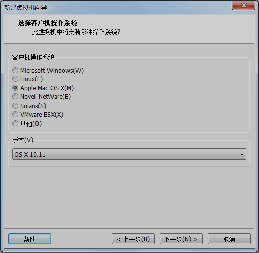

Windows下玩苹果
软件共享地址 win+R 输入 \\172.20.17.209\share\windows下玩苹果
推荐安装配置：固态硬盘留出40G，如果玩RN的话留出60G
一、 安装VMware Workstation
直接下一步 ， 下一步就可以了
二、 安装unlocker 208 （for OS X 插件补丁）
不要打开虚拟机，找到 unlocker208\win-install.cmd 以管理员身份打开win-install.cmd
然后打开虚拟机，需要注册码进行注册，注册码也在共享里
三、 新建MAC虚拟机
点击浏览选择镜像文件，文件类型选择为*
选择版本为OS X 10.11

虚拟机名称和位置自定义
点击自定义硬件，修改内存为4G
点击USB控制器，修改为USB2.0（为了在mac上识别iPhone）

先不要开启虚拟机：
直接开启虚拟机的话， 会出现情况，
我们需要要找到并打开安装目录下的 Sierra10.12.4.vmx 文件
使用记事本打开后，在 smc.present = "TRUE" 后面添加 smc.version ="0" 并保存即可
最后开启虚拟机。 开始安装
到这里继续不了，别慌
点击实用工具的磁盘工具
关闭磁盘工具窗口，点击刚才抹掉出的磁盘gou，点击继续
漫长的等待~~~
等待过后的喜悦
安装好之后再安装VMware Tools（为了复制拷贝文件和其他功能）
到此全部结束，尽情开启你的MAC之旅吧。